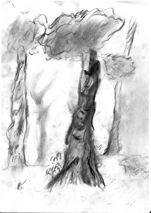

Вступление
В темноте и непонятной мгле все стояло неподвижно. Это было до начала Земли. Пока не было Земли и не было ничего, а только одна темнота и мгла. Мира не было.
Но вот в темноте что-то зашевелилось. Показался черный комок, который катался во мгле по ничему. Комок собрал тьму и собрался в форму клубка. Этот клубок был единственный живой предмет на свете. Он катался почти день, хотя дня и ночи в этой мгле еще не было. Вскоре этот клубок стал большой диаметром в рост человека. Вдруг он начал дребезжать и качаться. И тут он взорвался, но его нити не разлетелись во все стороны, а всполохнулись и образовали живую форму. Потом клубок взял объемную форму и создался Бог.
У него сразу появились ум, сила, голос и речь. Он говорит:

- Я сам себя сделал, сделал из ничего, и я буду иметь имя, мое имя Силпос. Я сделаю закон, - сказал он.
Вот его закон:
1. На свете должно быть существо с короткими волосами и его будут звать мужчиной, а существо с длинными волосами будут звать женщиной.
2. Между мужчиной и женщиной должна быть пара, что значит они должны жить вместе в дружбе и благодарности друг другу.
3. Семья – это значит мужчина, женщина и ребенок должны жить вместе и не ругаться.
- Да, я закон то придумал, но для кого, для себя что ли? Конечно же нет. Я должен сделать Богиню, богиню-жену
Бог Силпос долго думал, как сделать богиню-жену, хоть он сделал сам себя из ничего, а как сделать Богиню. Ведь ей надо дать магию и дух женщины, чтобы она родила четырех Богов, четырех наследников.
- Хорошо, а сейчас я делаю Богиню, и у меня будет семья.
Он собрал темноту и еще темноту и слепил из нее клубок. Потом Бог Силпос сделал восемь клубков собрал их сделал форму Богини, дунул и Богиня зашевелилась и начала ходить. Потом Силпос дунул еще раз и она начала говорить. У нее появился ум и она сказала:
- Ох, я могу уже говорить и думать. Это хорошо, но мне бы магию и божественную силу. Как вижу, ты меня сделал, то доделай меня.
Бог Силпос стукнул себя по голове и произнес:
- Что же я забыл дать божественную силу.
Он дунул еще раз, но силы было только чуть-чуть, он дунул на нее еще раз, и у нее стала божественная сила.
- Еще надо дух женщины дать тебе. Если ты не знаешь, что это такое – дух женщины, я тебе потом объясню, - сказал торопливо Силпос.
- Хорошо, потом скажешь, - сказала она.
Силпос еще раз дунул, самый последний раз и у нее появился дух женщины и красота.
- Сейчас все, - сказал довольный Силпос. – Теперь ты должна знать мой закон и мои правила.
- Хорошо говори свой закон, - ответила Силпосу она.
И он рассказал ей все, что надо было и о законе и о семье.
- Хорошо, ты сделал, ты придумал законы и значит, ты должен меня назвать.
- Хорошо, ты будешь называться … «Соляия».
Бог Силпос сказал, что он и она семья, только детей не хватает.
- Дети родятся, когда надо, - говорил Силпос.
Прошел день, хотя дня не было. Силпос дунул и сделал из темноты волшебные предметы и плащи. В конце концов ему надоело это делать, и он сказал:
- О всё! Теперь я сделаю помощников двух духов. Мне потребуется и твоя помощь, Соляия.
А в то время Соляия думала о детях и когда услышала, что Силпос сказал, то ответила:
- Ты смог меня сделать!? Сделать Богиню, но сделать двух духов не можешь.
- Я могу сделать духов, - сказал спокойно Силпос.
- Хорошо, я тебе помогу, - ответила Соляия спокойней.
Соляия взяла комок темноты и сделала клубок, и еще, и еще и таких клубков десять. Делать клубки ее научил Бог Силпос. Вскоре было сделано двадцать клубков. Бог Силпос поделил их поровну. Потом десять клубков он соединил в один большой клубок и произнес слова, постоял и начал ждать. Ждал он не долго и вдруг клубок взорвался, и дух заговорил каким-то чуть-чуть другим голосом:
- Сделал ты меня Бог Силпос, значит, я должен тебе служить, тем более я дух.
- Да ты прав, я тебя сделал, тем более ты мне очень понадобишься, а пока иди куда хочешь.
Дух поклонился и испарился, как полагается духу.
Также Бог Силпос сделал второго духа. Тот сказал те же самые слова и тоже испарился. Потом Бог Силпос сказал:
- Мы сделали духов, потом нам надо сделать три мира:
первый мир – мир Богов,
второй мир – мир духов и
третий мир – мир живых и умерших,
- Тебе понадобится моя помощь и помощь духов, - сказала Соляйя.
- Да, я духов созову, но и ты должна помочь, - сказал Силпос. И он хлопнул три раза. Перед ним показался один дух.
- Позови второго духа, - сказал Силпос серьезно.
- Хорошо, я повинуюсь, - сказал дух и поклонился.
Не успел Силпос глазом моргнуть перед ним стояли два духа.
- Теперь сделайте из темноты десять тысяч черных клубков, но клубки должны быть большими как я.
- Я повинуюсь, - сказал первый дух.
- Я тоже, - сказал второй дух и они исчезли во тьме, а Бог Силпос и Богиня Соляйя говорили какие-то слова.
Вскоре духи вернулись и перед ними лежало поле черных клубков. Силпос махнул рукой и перед ним показались три гигантский клубка. Бог Силпос и Богиня Соляия стала у одного клубка и начали что-то шептать, а потом сказали: «Мир богов». И они оказались в поле, а небо было чисто голубое, а трава такая мягкая, как софа. Но все равно в поле стояли два клубка. Тогда Силпос сказал духам:
- Возьмите этот мир и унесите подальше от этого места.
И они опять стояли в темноте, а рядом два клубка. Также поступили и с другим клубком. И этот мир духи унесли подальше. И с третьим миром поступили также.
- Сейчас только нужно, чтобы наши сыновья сделали наполнили третий мир, - сказал Бог Силпос.

Начало Земли
Так и жили Бог Силпос и Богиня Соляия. Было скучно и так как они жили во тьме и воздухе, предвигались они тоже во мгле. Однажды Cоляия родила 4 ребёнка. Были они 4 Бога. Росли они очень быстро, потому что они были Богами: один Бог был Бог воздуха, второй – Бог земли, третий – Бог воды и четвертый – Бог огня.
Были они сильны и могущественны почти как их отец, но однажды Бог Силпос и Богиня Соляия ушли в мир богов.
– И вот мы одни, – сказал Бог воздуха.
- Мне надоело жить в полной тьме и безвременном мраке. – сказал Бог Земли.
- Ты прав давай сделаем солнце и звезды, чтобы был свет и тепло. – сказал Бог воды.
- Да, – сказал Бог огня, который хотел сказать это первым.
- Да, – сказал Бог воздуха, немного подумав.
- Да, – сказал Бог земли.
И они начали делать солнце и звезды. Больше всего их делал Бог Огня.
- Не сделать ли нам землю, - вдруг сказал Бог Земли.
Все согласились. Все приложили свои силы. Бог Воды - океаны и моря. Бог Земли - почву и болота, пустыни. Бог Огня - вулканы и лаву. Бог Воздуха – ветер и воздух. Сделав это, они сделали коз, деревья, драконов и дальше.
В конце концов, трем Богам – Богам воздуха, земли и воды стало скучно и они уже хотели уходить в мир богов. И однажды они сказали Богу Огня:
- Мы будем уходить, и ты наверно тоже.
- Нет, - ответил Бог Огня.
- Хорошо, - сказал Бог Воды.
Но мы оставили наследников: племена магов и эльфов.
- Нет, - возразил Бог Огня.
- Нет, нет, нет, - завопил Бог Огня.
- Но мы так хотим, - сказал Бог Воды, а также я ещё и эльф.
- Нет, - сказал Бог Огня, - Нет.
И он поднял огонь в руках. Но Бог Воды успел кинуть воду в огонь и огонь начал потухивать.
- Ладно я уйду, - сказал Бог Огня и повернулся в сторону гор Хей Дулата.
- А мы будем делать хуслаев.
- Да, да, - закричали два Бога.
Хранители мира и покоя на земле
Боги вложили все свои силы, чтобы сделать хуслаев. Сначала мужчину и женщину, потом еще несколько хуслаев. Они сразу же побежали в пещеру.
- А не сделать ли еще племена, - сказал Бог Земли.
- Да можно, - сказал Бог Воды.
- Первое эльфов и каждый из них будет обладать силой и магией и магов тоже, - сказал Бог Воды.
Сделать магов и эльфов, было очень трудно, поэтому Боги начали вспоминать старые заклинания и сказав заклинания, они создали магов и эльфов. Первым был маг Синфин. Он повернулся к Богам, поклонился и ушел. С эльфами тоже самое, первый эльф был эльф Самир. Его род был предназначен стать хранителем мира. Потом они сделали маленьких хоббитов, умеющих прятаться очень хорошо.
- Ну ладно, мы уходим, - сказал Бог Воды, - сеч мир в на д рук.
И они исчезли.
Хуслаи делали какие-то хижины, эльфы делали деревянные заборы, а Cинфин ходил по холмам. Хоббиты рыли норы и их память была пуста. Поэтому они ничего не помнили и даже Синфин очень плохо. Это сделали Боги, чтобы они не помнили, кто их сделал. Если эльфов не убьют, они могут жить бесконечно и маги тоже. За этим всем следил Бог Огня. Он не ушел. Он сидел у подножия Хей Дулата и ворот Сохрияль.
«Я им задам хранителям мира, этим эльфам Самиру и роду Синфин» - он думал про себя.

Не спокойные дни на земле
Прошло много дней, как появился род Синфина, род Сор Билата и скалы Сутир. Хоббиты жили у реки Хойди. А хуслае становились с каждой неделей все темнее и темней, пока не стали людьми .
Но что-то часто появлялась буря в океане и взрывались вулканы далеко.
Один раз Сослай, а это был человек сказал:
- Мы хотим с вами объединиться, эльфы.
- И зачем? – спросил Самир, - зачем?
- Чтобы мы имели армию, - сказал Сослай.
- Еще рано, если вы будете делать войско, то кто ваш враг?
- Пока никто, - ответил Сослай, - но будет.
- Да! Да! - закричали люди.
- Да ты прав. И не одна война будет, но пока нет. Нет я не согласен.
Тут у людей поднялся шум. Некоторые кричали:
- За это мы отомстим! Мы не согласны! Тогда когда мы объединимся?
- Успокойтесь, - сказал Сослай.
Потому что некоторые люди поднимали копья и камни.
- Когда скажут великие боги, - ответил им Самир.
- И когда ваши великие боги дадут знак.
И людям в ответ поднялся громадный ветер, на реке стали огромные волны, так что хоббиты побежали на вершину холма и поднялось землетрясение, что камни побежали с Хей Дулата.
- Не обижайте Богов сказал, - сказал Симур, брат Самира.
- Ну уж хорошо, - сказал какой-то человек.
На это поднялся небольшой ветер. И тут пришел Синфин с каким-то волшебником, полный в коричневом цвете, а Синфин в белом.
- Не обижайте Богов сказал, - сказал Синфин.
Другой маг, которого звали Ганфал тоже кивнул.
- А ответ будет таким, - сказал Ганфал, подумал и заново сказал, - ммм …, ну вы увидите. - Мой род Ган знает, что на земле живет какой-то Бог.
И Бог Огня вспыхнул и вулкан взорвался.
- Если бы эти три Бога не смотрели бы на землю, то я бы им задал, это точно, - прошипел Бог огня. И от этих слов появилась ночь.
Все сначала боялись этого мрака, но Синфин сказал:
- Эта ночь для того, чтобы вы спали.
Долго они не привыкали и даже эльфы не могли к этому привыкнуть, но потом все-таки привыкли.
- А мне кажется, что этот мрак прислал какой-то темный враг, - однажды сказал Симур Самиру.
- Ты прав, - сказал Самир, - что-то пахнет войной.
- Скоро придет время, когда мы объединимся с людьми, - сказал Самир, - мы эльфы и у нас есть прекрасные лучники, а у людей пехота. Мы должны быть отбить атаку, но мне кажется, - и Симур замолчал и посмотрел в сторону Хей Дуата, - но мне кажется что враг будет намного сильней нас.
- Мда, - сказал Самир.
И они сразу заснули.
Новые существа
Тимур и Самир проснулись как обычно утром. Встав и покушав лоуна, Симур побежал к другим эльфам узнать что-то новое, а Самир сидел дома, иногда выходил на улицу.
Вот через час к Самиру прибежал Симур и говорит:
- Сегодня эльфы говорят, что люди делают что-то вроде большого дома, кажется, дворец и делают люди новую армию.
- Это хорошо с одной стороны, - сказал Самир.
- И еще хоббиты Сем и Марип пошли искать новую землю – сказал Симур.
- Да скоро все хоббиты уйдут, - сказал Самир.
- Да, ты прав.
- Вот что я придумал Симур, - сказал Самир. – Я хочу сделать новых умных существ. Они будут называться гномы. Они будут больше нас.
- Да не фантазируй, - сказал Симур.
- Да я не фантазирую.
- Но ты не можешь, - сказал Симур, - только Боги могут.
- Но можно объединить силы Галанаины, твои, мои, Сичина, Росли, Синфина и Ганфала.
- Но Боги все равно сильнее на много, - сказал Симур.
И погода стала еще светлее.
- И ведь умник, а не хочешь ли дать им магию? – со смехом спросил Симур у Самира.
- Нет.
- Ну, это уж точно, - засмеялся Симур.
- Ну нет, с такой армией магов можно сделать гномов, я уверен, - сказал Самир.
- Если что ты сделаешь их, но сделаешь их не правильно, и они могут страдать всю жизнь?
- Но я лучше разбираюсь в магии, - сказал Самир.
- Да ты лучше разбираешься, но я не могу понять, как ты додумался, только Боги могут так сделать, - сказал Симур.
- Нет, но вообще давай созовем совет.
- Хорошо, но я не буду участвовать в совете.
- Ладно я созову Галанаин, Сичина,Росли, Синфина и Ганфала.
- Ну хорошо, иди, - сказал Симур.
Самир вышел на улицу затрубил в рог Сокронлам и потом пошел куда-то.
- Кажется пошел на поляну Хисхус,- сказал Симур, а сам вышел на улицу и сидел на скамейке у забора.
После одного удара, а для Симура почему то он шел очень долго, пришел наконец то Самир и лицо у него было сверкающе счастливое. «Наверно он выиграл»,- подумал про себя Симур. А Самир сказал:
- Ну что, я выиграл!
- Хорошо, - пробурчал Симур.
- Ты будешь нам помогать? – спросил Самир.
- Нет.
- Но все сказали «Да», не считая Сичина, а он самый слабый в магии, - сказал Самир.
- Ну хорошо, а когда прийти и куда.
- Завтра утром на поляну Си-Си, - сказал Симур и лег спать.
На следующий день все собрались.
- Мы собрались всё что надо, - сказал Синфин, - Теперь надо все закопать, полить и сказать заклинания.
- Как садить дерево, только без заклинания, - усмехнулся Симур.
Всё закопали и полили. Ганфалд начал читать заклинание. Небо немного потемнело.
- Сич ну ж с умное большое р – сказал Ганфал.
И начал расти какой-то карлик. Вырос он только по живот эльфам, а сам ворчал и кряхтел: «Ох вы дураки, что 90 лет мне, а у меня борода. И выгляжу я как столетний старик, ну и дураки». Плюнул им в лицо и ворча пошел к реке. Второй гном был еще ворчливее. Присоединившись ко второму, они начали вместе ворчать, насчет того как их сделали. Потом сделали еще гномов и еще около 15 гномов. Гномы, собравшись в круг, начали ворчать и разговаривать.
- Ну, что я говорил, - сказал Симур, - ты сделал их меньше нас, а хотел сделать больше и еще такие ворчливые что ужас.
- Ммм, они ведь не мучаются, - сказал Самир.
- Да, но ты сделал их, нууу можно сказать не корректно.
- Хорошо ты прав, хоть ты и мой младший брат.
- Ладно, - засмеялся Симур и сказал Синфину, - Вот я выиграл. Самир хотел сделать гномов больших, а сделал их маленьких, даже нам по пояс или живот, а я ему говорил, что он сделает их не корректно.
- Да ты прав и я удивляюсь, что было со мной, что я согласился, - сказал Синфин.
Самир, огорчившись, пошел домой, а по дороге встретил хоббита Сима.
- Привет Сима.
- Привет, - сказал Сима.
- Позови своего брата Симура и Синфина с Ганфалдом к хозяину лесного дома. Он скажет, что-то интересное, кажется о находке Сэма.
- Где этот дом? - спросил Самир.
- За речкой, а у речки есть мост, потом к Хей Дуата и сворачиваешь на долину Хисхю. За окраиной леса поворот и дом, - сказал Сима и убежал.
Самир пошел, но вспомнил, что надо созвать и других. Он вернулся на поляну, потому что знал, что все должны оставаться на поляне Си-Си. Он был прав, все были там. «Эй Симур, Ганфал и Синфин, подойдите ко мне», закричал Самир. Сначала никто не слышал, они разговаривали, но потом Самир крикнул второй раз и все услышали и подошли.
- Чего нас звал? – спросил Ганфал.
- Да Сима сказал, чтоб я вас созвал и мы пошли к хозяину какому-то, - сказал Самир.
- А как его зовут?.
|
|

|
Энты
Так Синтик начал свой рассказ.
- Вы знаете, что Сэм и Морип пошли искать свою новую землю, - сказал Синтик.
- Знаем, - сказал Симур.
- Ну, так они пошли и нашли новую землю у какой-то реки и мы ее назвали Сималим. По их сказаниям она очень далеко. Они шли прямо и прошли через поля, леса, луга, даже нашли и еще людей, чему я очень удивляюсь. Ну и конечно люди не заметили хоббитов. Люди не могут заметить хоббитов. У людей есть даже каменные заборы и вождь. Это пока не самое главное, а когда вот они зашли в один из лесов, - начал Синтик. «Кажется начинается»,- подумал Симур.
- Ну вот они зашли в лес, он был темный, полный деревьев больших и мясистых. Шли они так день или два. Все было спокойно, а лес был такой темный в одном месте, что ужас, но вот они увидели какое-то движение. Было уже темно и поэтому они не увидели, что шевелилось и на всякий случай спрятались за какие-то камни. Потом они различили, что это было что-то большое. Всю ночь они спали под корнями деревьев и часто видели, что корни двигались и от страха они закапывались в землю. На другой день Сем сказал Марипу: «Что это было? Я не могу спать в этом лесу», сказал Сем. «Да, да, да, ты прав», сказал Марип. Они не знали куда идти, - говорит Синтик, - Вперед два дня пути, назад дня четыре и они решили пойти вперед, так как, по их мнению, было меньше дней пути. День был обычный, они шли и шли, не считая, того что в сумерках они увидели гигантскую тень и им даже показалось, что это было существо в виде дерева.
- О да, интересно, - сказал Самир шепотом и задумчиво.
- А дальше, - продолжал Синтик, - все было спокойно. После двух дней пути они не увидели энтов, так мы их называем. Потом они вышли из леса и пошли по полям.
- А дальше они будут эти энта, - перебили Ганфал с Самиром.
- Нет, - ответил Синтик, - Так вы слушаете дальше?
- Нет спасибо за это, - сказал Самир и пошел к двери.
- До свидания, - сказал Симур.
- До свидания, - ответил Синтик.
Выйдя из дома, им показалось, что ветер был холодный по отношению к температуре в доме.
- Интересно, а может нам самим их увидеть, - сказал Самир.
- Ну это конечно интересно, -сказал Симур, - Ой!
И Симур нагнулся, потому что над ним пролетел орел.
- Похож на посланца Бога, - испугался Ганфал.
- Ну так мы идем за этими энтами.
- Нет я не иду, - сказал Ганфал.
- Нет, - сказал Синфин.
- А ты? – спросил Самир.
- Пойду, - сказал Симур.
- Ты не забудь о людях, - сказал Синфин.
- Ну мы полетели, - ответил Самир.
- Хорошо, - сказал Синфин.
- О идут, - сказал Симур.
Вдруг из леса вышел отряд людей и незаметно скрылся.
- Идем, - сказал Самир.
- Куда? – спросил Симур.
- Ну куда же, домой.
- Хорошо, идем.
- Эти энты, могут быть опасные, если они деревья и еще и большие.
- Я так не думаю.
- Ну и какой магией ты их остановишь?
- Подниму камни нуцуу. Хотя не пойдет,- ответил Симур.
- Ну вот я прав, - сказал Самир, - и поэтому можно их сделать друзьями.
- Их можно остановить магией ласки, если у них нет гнева и ведь они не враги.
- Да, но я бы сделал их все равно друзьями.
- И как?
- Дал бы им голос и разговор, если они его не имеют, - сказал Самир.
- Ну, это хорошо, что ты не делал их сначала, как гномов – сказал Симур, входя в дверь.
- Это точно.
- Значит, мы идем завтра?
- Да вечером.
- А почему не днем или утром.
- Да хочу погулять по лесу.
«Странно», подумал Симур, но ничего не сказал.
- Хорошо, - сказал он и пошел кушать, Самир тоже.
- Хочу посмотреть, что нас ждет впереди. Сказал Симур, кушая хлеб с кашей.
- Да,- ответил Самир, - а вообще вкусный хлеб.
- Я его вчера испек в обед.
- С магией?
- Ну я только в зерна прибавил магию, - сказал смущенно Симур.
- А ничего не сказал.
- Ты же где-то был.
- А да в лесу.
- Я заметил, что ты часто ходишь в лес, – произнес Симур.
- Да я хочу посмотреть на лес.
- Странно, а вообще вернемся к теме. В какой удар надо будет выйти?
- В четырнадцатый удар.
- Хорошо.
«ДЫ-ДЫ!!!»
- Слышишь? – спросил Симур.
- Да, уже двенадцатый удар, я пойду на реку, - сказал Самир.
- Хорошо, иди.
«Если река не темная, хотя я могу осветить ее магией света. Да ладно», - подумал про себя Самир. Оба они молчали, когда уже Самир пошел и взял плащ, потому что на улице был дождь.
- О еще этого не хватало, - пробурчал Самир и ушел.
- Мда, я лучше камин зажгу, хотя мало дров и соломы, ну ничего, - сказал Симур.
С этими словами он пошел к двери и взял дров, соломы и камней, чтобы разжечь камин. Он наблюдал за погодой. На улице лил дождь как из ведра и еще с градом. Симур что-то пробурчал, закрыл дверь и пошел к камину. Вдруг кто-то постучал в дверь. Он думал что Самир и сказал:
- Входи Самир.
Но в ответ послышался чужой голос.
- Это я Трид, принес письмо, - сказал голос.
Симур открыл дверь. На пороге стоял эльф в черном плаще. Его глаза сверкали. Он дал Симуру письмо и хотел идти, но Симур остановил его:
- Где Самир?
- Не знаю, - ответил Трид, повернулся и уже окончательно ушел.
- Мда, странно, - сказал Самир и начал читать.
«От Синфина для тебя и Самира, пишет Ганфал. Я посмотрел в кубок будущего и увидел только, что пока только будет больше дождей и ночь будет длинней и тьмы больше и дожди такие длинные, могут длиться двое суток. Прости если у тебя дела, и я помешал тебе, но все равно имейте ввиду, что тьма становится больше. Пока».
«Да, странные дни» - сказал Симур и решил сжечь письмо. Но подумал оставить его Самиру, а в огонь кинул слово «пока». С этими словами он взял нож, вырубил слово «пока» и кинул в огонь. Весь вечер и ночь Самир не приходил. Но наутро кто-то постучал.
- Кто там? – спросил Симур, нахмурив брови.
- Это я, Самир, - сказал кто-то за дверью.
- Неужели, - проворчал Симур и открыл двери.
За нею был Самир в новом халате.
- Ну чего, аж утром пришел?
- Да дождь, что ужас был и я было далеко.
- Ты был в лесу?
- Да.
- Ох твой лес. И что ты в лесу ночевал?
- Нет, я зашел в дом Ганфала, - ответил Самир.
«Вот из-за чего наверно он ходит в лес», - подумал Симур, а сам спросил:
- И что он сказал?
- Ничего, только, чтобы я пошел домой поскорее, - сказал Самир как-то странно и блеск в его глазах сверкнул очень светло.
- Ну он прав, входи, - сказал Симур.
- Ну и что такого важного? – спросил Самир.
- Подойди к столу и почитай.
Самир увидел письмо и прочитал его.
- Кто его принес? И что ты вырвал? – спрашивает удивленно Самир, смотря на камин.
- Принес его какой-то эльф. Его зовут Трид, a я вырвал слово «пока» и кинул его в огонь, а то мало дров, - сказал Симур.
- Ты соберешь дрова, а то я устал?
- А что ты делал?
- Ой, я забыл сказать.
- Так расскажешь?
- Да, конечно, я начинаю. Так вот, был ужасный дождь с градом, а град в двое больше кукурузы. Было это далеко от нашего дома, но я все равно пошел. Пройдя около двух миль, я увидел свет из окна и подумал: «Еще далеко до дома». Я пошел к двери и постучался. Кто-то ответил дружелюбным голосом: «Входи дорогой Самир». Я вошел и удивился, за столом сидел Ганфал с кубком, стал он темным и успокоился. «Я знаю, что ты хочешь дать энтам голос, я знаю». Ты маг и многое знаешь. «Да, ты можешь отсюда дать им голос магией дали», - сказал Ганфал. Хорошо, сказал я. Но ты что смотрел на меня через кубок дали Симарин? И я повернулся в сторону шкафа с камнями и кубками магии. «Да, но и нет. Я его сделал «темнее». У меня потемнело в глазах и я пошатнулся, но потом сел за стол. Ганфал повернулся к шкафу и свечка погасла. Тогда я поднял руку, и шкаф осветился голубоватым светом. Ганфал достал Кубок Дали вложил щепки и сказал …».
- Знаю, знаю, - перебил его Симур.
- И так, он сказал слова и …
- Знаю, знаю.
- Ох, ты много чего знаешь. Ну ты знаешь, что случилось и кубок показал дерево? Оно шевелилось. В темном лесу пошевелилось второе дерево. Оба они, обросшие мхом, плесенью и паутиной, стояли, но потом одно дерево зашевелилось и ободрало паутину. И пошло на другое. Другое тоже зашевелилось и стало махать ветками и начало потихоньку двигаться, а другое начало дубасить палкой. Дерево отступало от взмахов палки и ушло в лес. Ты все знаешь подумал я, но сам смущено спросил. И что ты поможешь? «Да», - сказал Ганфал. «Ночью?» – спросил я. «Да», - ответил Ганфал. Так идем ночью или утром, - усмехнулся я. «Не дурачься», - сказал Ганфал и оскалил зубы, будто зверь. «Не знаешь о магии длины дда наверно зз-знаешь. Садись», - сказал он, потому что я встал с недоумением. «Знаю», - сказал я как вкопанный. «Хорошо», - сказал Ганфал поднимаясь и держа в руках …
- Знаю, знаю, - перебил его Симур.
|
|
|
Уход гномов
Ав это время гномы шли по лесу подальше от поляны Си-Си и от всех эльфов, магов и людей. Хотя гномы и очень плохо знали людей, и как-то раз видели их, зайдя далеко в лес. Хоббитов они совсем не знали. Хоббитты прекрасно бегали, бегали бесшумно и еще умели прятаться.
Главарь гномов Пилим кружился у большого дуба. Они уже успокоились и не ворчали, но дружбы с эльфами почти не было.
- Я по крайней мере уйду из леса и пойду в необитаемые места, - сказал Пилим.
- Ну хотя бы уйти от туч света и неба, пойти под каменные стены, - сказал другой гном по имени Сирф.
- Да, да, идем от света, сделанного эльфами! - закричал другой гном пронзительным криком.
- Да-да-да-да! - закричали все гномы.
«Ой, что это за крики», - сказал Симур и Самир сразу далеко отсюда.
- Идем, идем! – кричали в то время все гномы.
- Мы идем под землю, дальше от света, дальше от купала неба! Да!?- закричал Пилим.
- Да, да! – закричали все гномы.
- Значит идем! – закричал Пилим и двинулся в путь, а за ним все гномы. Шли они кто как, кто на кобыле или на олене, некоторые пешком, а даже на телеге, запряженными кобылами ехали гномы.
Все они были вооружены топорами, палками, даже мечами и почти у всех были щиты. Все это они получили от людей, а сами не знали, почему люди так сделали. Шли они в сторону Хей-Дуата. Они думали, что именно в Хей-Дуату есть пещеры с огромными каменными стенами, потолками, теряющимися в темноте и мгле. Об этом всем мечтали многие гномы, а больше всего Пилим. Размечтавшись о большой пещере, из которой можно сделать замок с фонтаном, Пилим погрузился в реку мечты и уже ничего не слышал. Вдруг он почувствовал, что его схватили, он обернулся и услышал: «Проснись, ты что лунатик?» Пилим опомнился и увидел рядом своего друга Шина.
- Я опомнился, - сказал Пилин. Рядом стоял Шин, они были на поляне, множество костров и палаток.
- Ох я сейчас упаду, - сказал Пилим, чувствуя усталость, хотя когда он шел и мечтал, то не чувствовал усталости.
- Ну, садись, - сказал Шин.
- Ох, спасибо большое, - сказал Пилим, - а что было днем? Я ничего не видел и не слышал.
- Да нечего рассказывать, ничего интересного.
- Что вы видели? – спросил Пилин, поглядывая вокруг.
- Видели мы камни Хей-Дуата и больше ничего, - сказал Шин.
- Ох, хорошо.
- Ложись, - сказал Шин - смотри, костры потухли, уже ночь, - ложись.
- Хорошо, - сказал Пилин и лег, а потом и Шин. Шин сразу уснул, а Пилин, не смотря на усталость, не мог заснуть. Он все думал, много ли до Хей-Дуата. Когда он шел ему казалось очень близко, но не так как хотелось бы. Скоро, когда прошло уже полночи, Пилин заснул и то, поворачиваясь во сне. Скоро стало утро. Шупилин, один из гномов, разбудил всех остальных. Когда Шупилин будил Пилина, то он в недомогании поворачивался и не хотел вставать, но потом его все равно подняли, хотя и с большим трудом.
- До Хей-Дуата один день или полдня, - сказал Пилин устало.
Все снова встали и пошли. Казалось они близко к цели. Они шли по тропе к Хей-Дуату. Деревья склоняли свои ветки. С двух сторон березы и кусты, иногда попадались орехи, вишни и даже яблони. Солнце блестело ярко, что Пилин прищуривал глаза, смотря на небо. Шли они медленно. Однажды они встретили красивого оленя. Все разговаривали, некоторые даже кричали. Шли они и шли, уже хотелось кушать и Пилину тоже. Он приказал всем остановиться и отдохнуть. Пилин кроме того, что хотел есть еще и хотел спать. Он приказал двум гномам, которых зовут Дин и Липен, идти на охоту, так как хорошо умели стрелять из лука.
- Ох, - сказал Пилин, смотря на Хей-Дуат, - еще не много, надеюсь, до цели.
Шин, Пилин и Шупилин разговаривали между собой.
- Интересно, что принесут нам Дин и Липен, - сказал Пилим.
- Давай о другой теме, - сказал Шин, - давай поговорим о пещере. Представте, мы в пещере с потолками и фонтаном в драгоценностях о …
- Хватит, - сказал Пилим, - а вообще о драгоценностях ты хорошо придумал. Золото и алмазы – идеальные драгоценности.
- И почти никто не нашел, - сказал Шупилин, - только люди их имеют и то мало.
- Да, … а в пещере должно быть больше драгоценностей, - сказал Пилим и посмотрел в сторону Хей-Дуата. Он все не мог терпеть и думал, что их небольшое путешествие скоро кончится и они дойдут до пещеры.
Пилим прилег, а Шин и Шупилин разговаривали. Они даже не заметили, как Пилин прилег и начал дремать. Шупилин не стал его тревожить. Он позвал некоторых гномов сторожить главаря, как это было принято. Гномы-стражники, которых звали Буб и Эльфит, подошли к Пилиму. Эльфит получил такое имя, потому что он дружил давно с эльфом Тридом. Но потом поругались и разошлись. Хотя Трид не ругался, а хотел сохранить дружбу, но потом Эльфит все равно поломал их дружбу и так они окончательно разошлись.
Гномы-стражники сели и стали охранять Пилима. Прошло некоторое время Шин и Шупилин начали переживать насчет Дина и Липина, но тут кто-то закричал из леса:
- Мы идем, а добыча не маленькая.
- Наконец-то, - сказал Шупилин, - пришли.
Из-за кустов вышел Дин телегой, а рядом Липин. Дин и Липин сели и вытащили из телеги двух кабанов.
- Проснись Пилим, - сказал Шин, - пришел Дин и Липин.
Пилим проснулся довольный за еду и сел за стол первым, а за ним и все остальные, как у них было принято. Скоро все съели еду и мяса всем досталось. Они и не жарили мясо, потому что Дин и Липин зажарили мясо прямо в лесу.
Все пошли снова. Они были сыты и довольны, и запели свою любимую песню.
Мили, Лили жили в ели
Мили, Лили ели ели
Мили, Лили съели ели
Деревья стояли по-прежнему. Ничего не изменилось, не считая, что прямо перед ними возвышались грозные Хей-дуату. Они шли и шли. Все было по-прежнему, только вечером они увидели между деревьями какое-то тощее существо с копьем и почти голое. Это существо проскользнуло через деревья и его глаза сверкали. Пилим сказал, не на шутку испугавшись:
- Держитесь близко и будьте наготове, потому что нам могут устроить засаду.
Другие гномы тоже перепугались не на шутку, прижались друг к другу и приготовили оружие, но все было спокойно.
- Успокойтесь, успокойтесь, - крикнул Пилим, нет никакой засады.
Гномы посмотрели в сторону леса, а потом в сторону Хей-Дуата.
- Успокойтесь, нет никакой засады, - вторил Шин слова Пилима, - вы не верите нашему любимому Пилиму? Верите? – спросил заново Шин.
- Верим, Верим!!! – закричала толпа гномов и успокоилась.
- Сегодня будем ночевать здесь, - сказал Пилим, - а завтра в любимом Хей-Дуату.
- Да! – закричала толпа и легла, а за ним и Пилим. Это его удивило, потому что он должен был лечь первым, как говорит их закон.
Пилим, чуть обидевшись, приказал нескольким гномам охранять всех спящих. Всего в их племени было около тысячи гномов. Он лег у дерева и остальные тоже легли. Пелим хоть и думал, что опасности нет, но насчет того существа он немного боялся, тем более оно имело копье и даже щит. Но он все-таки сказал гномам успокоиться. Он успокоился и заснул, рядом спал Шин. Ночь была спокойная, но шел дождь. Пилим специально лег под дерево, потому что вечером небо было в облаках, предвещая дождь. Утром он проснулся, хотя его никто не будил. Все спали и даже все стражники, не считая Шупилина.
- Чего вы стали так поздно? – спросил Шупилин как-то сонно.
- Да я так проснулся, - сказал Пилим тоже сонно, - ты скажи, почему почти все стражников спят?
- Я решил, чтобы они легли, они хотели спать.
- Ты думаешь, что ты делаешь? Ты их отпустил спать.
Он посмотрел вокруг и только сейчас заметил, что стоит туман. Туман был какой-то серый, а не белый.
- Буди всех, - приказал Пилим.
- Хорошо, - ответил Шин как-то более бодро.
Пилим отвернулся и махнул рукой небрежно. Это был сигнал быстрее делать какое-то дело. Шин начал лениво всех будить. Пилим увидел это и так крикнул на Шина, что все сразу проснулись. Увидев Шина и разозленное лицо Пилима, все встали как вкопанные и попятились назад. Пилим сказал только более спокойно, хотя тоже чуть не кричал:
- Я не на Вас кричу, а на этого , - и он промолчал, - на этого Лалагина. Фу-фу, - плюнул он, - не Лалагина, а на Шина. Но, - сказал Пилим спокойно, и он опять крикнул, но злобно, а весело, - сегодня мы знакомимся с пещерой, а следующие пять дней будем веселиться, здесь и там, - и он показал в сторону пещеры Хей-Дуату.
- Так, - продолжал весело кричать Пилим, - ну забудьте все обиды и ссоры. Сегодня счастливый день. Поэтому радуйтесь, пять дней не прошли зря. Все благополучно добрались и ничего опасного нет.
Но его последние слова вздрогнули, так как он вспомнил то существо и он пошатнулся, но никто кроме Шина не заметил.
- Да, да, да, да, - кричала толпа дружно, не зря мы Пилима взяли вождем, а не Тима.
Тим был охранником не Пилима, а всего племени гномов. Его и Пилима выбирали гномы, их оставили из пятерки, а в пятерку входили Шин, Тим, Пилин, Дори и Липем. Выбрали двух из пятерки: Тима и Пилима. И тогда начали первые самые большие выборы, долго были выборы. Многие говорили: «Пилим не командир, Пилим не командир». Так и произошло, Тима выбрали командиром, но не надолго. Тим был строгим и злым. У него были правила и очень строгая дисциплина. Кто очень сильно не исполнял ее – три удара толстой палкой, а кто был с ним не согласен или кричал на него – четыре удара плеткой. Этого кодекса хватило на два дня, было побито десять гномов и его свергли очень быстро. Гномы поняли, что надо выбрать Пилима. Если он будет таким же жестоким или сильнее, его тоже свергнут. Но этого не случилось и Пилим стал главарем. Шин, Дари и Липен смирились, а Шин и подружился с Пилимом. Но Тим не мирился, а разгневался на Пилима и думал, как его с почести главаря снять. И только он это вспомнил, как весь гнев опять проснулся. Он посмотрел на Пилима гневно и сказал про себя: «Ух ты, получишь за все». Тим был второй гном сделанный эльфами и очень горбат, а Пилим был молодой гном, не горбатый и без бороды совсем. Он повернулся спиной к толпе и пошел в сторону ворот пещеры и все за ним. Пилим еще раз посмотрел на солнце, хотя оно еле просвечивалось через туман. Пилим сказал: «Идем, идем, мы покидаем свет и небо, идем». Ему все равно было тяжело уходить со света и почти не видеть солнце. Все равно они родились на поляне, в лесу они жили две недели и так быстро уходят из леса. Уходят в неизвестные никем пещеры. Пилим вошел в пещеры. Тьма была непроницаема. За ним вошли все остальные гномы.
- Идите и найдите толстые ветки и факелы, а у кого есть дубины зажгите их и поставьте их на пол, чтобы была видна дорога, - сказал Пилим, - а один факел дайте мне.
|

|
|
Совет
Апока гномы шли до Хей-Дуату и кричали: «Да мы идем в Хей-Дуату» Самир и Симур прислушивались к крикам гномов. Они знали, что за морем тоже находятся эльфы – род Фиттин. Эти эльфы были сделаны Богами. Говорится, что род Фиттин был сделан после их – Симура, Самира, Трида и так далее. Также договорится, что на свете есть люди за морем и за лесом. За морем людей называют южане, а за лесом средиземцы. Эти люди которые возле нас - тоже средиземцы. Это все рассказал Синфин, когда Симур и Самир встретили его.
- Вообще, Синфин рассказал хорошую весть, - сказал Самир.
- Да, - ответил быстро Симур, - что-то дни стали непонятные, что ли тревожные и в таком роде нам их помощь обязательно понадобится. О, капля, - сказал он, - вчера дождь лил по полной программе.
- Это точно, - сказал уныло Самир, - пойдем смотреть на Кубок.
И он взбодрился.
- Я уже смотрел на эльфов которые за морем. Я даже успел подружиться с одной эльфиней. Ее зовут Филандина, - сказал Симур
- Что!? – закричал с удивлением Самир, - тебе Ганфал и Синфин говорили, тем более Синфин тебе говорил, что пока нельзя в Кубок смотреть.
- Н-да, - сказал Симур, чуть стеснившись.
- Хорошо, успокойся Симур. Ничего, что ты смотрел в Кубок Разговора, - успокоил его Самир.
- Прости, прости.
- Хорошо успокойся, идем домой, но потом в лес.
- Хорошо идем, - сказал Симур. Он уже заметил, что у Самира нет дня, чтоб не идти в лес.
- Смотри уже дождь начинается.
- Ну этот дождь. Каждая неделя с дождем. А потом после субботы весь день грязь, - сказал Симур, спускаясь с холма.
- А ночь больше дня идет и обычно без луны.
Они шли дальше молча, все смотря на небо, которое было пока Серое. В те времена, когда всех сделали Боги, как называемые Оголим, Сювода, Воздих и Землогир небо было голубое. Так называли четырех Богов. Некоторые по другому их называли, а некоторые так. Но вдруг небо начало темнеть.
- О горе, - воскликнул Самир, - если дожди начнутся, все двое суток будут идти.
- Да, да, еще может дольше.
- Да, да еще может дольше идти и трое суток и четверо суток, - сказал Самир.
Только он это сказал, как загремела молния и полил дождь. Симур и Самир быстро побежали к своему дому и скрылись там.
- В лес пойти не получится, - произнес Симур, садясь на новую софу, которую вышили люди и подарили им.
- Нет, нет – сказал хитро Самир, - для чего нам магия.
- Ну нет.
- Хорошо, хорошо.
- Я лучше буду спать.
- Ты уснешь под стук дождя? – удивился Самир, - этот дождь так грохочет.
- Ничего я усну.
- Ладно, я тоже лягу.
- Откуда ты взял это слово ладно?
- Услышал.
- Ладно, спокойного дня, - пошутил Симур.
- Спокойного, - пошутил в ответ Самир.
Они потихоньку уснули.
Симур проснулся вечером в восьмой удар утра. Еще было светло, окно открыто и за ним шел дождь. Симур разбудил Самира и сказал, что сейчас восьмой удар утра. Они походили по дому и, не зная, что делать, вышли на улицу, взяли с собой плащ да еду. Они шли к Синфину. Симур и Самир знали, где живет Синфин. Он сказал им, когда они встретились на поляне Си-Си:
- Я живу недалеко от поляны Си-Си. Вы должны идти по дороге к Хей Дуату и свернуть на лево у большого дуба и идти вперед сто шагов, свернуть направо, зайти за кусты и мой дом.
И они пошли как им сказал Синфин.
- Ты помнишь, как нам говорил Синфин? - спросил Симур.
- А как же помню наизусть. Идти по дороге к Хей-Дуату.
- Хорошо, а вот и большой дуб, теперь завернуть. А вообще, зачем Синфину так далеко жить от нас? – удивился Симур.
- Да так просто, подальше от всего, наверно.
- Смотри мы прошли сто шагов, а сейчас поворот за кусты и дом.
- Да ты прав, но только как видишь дождь усиливается. Давай пойдем побыстрей, - сказал Самир ничуть не смутившись, что его перебил брат.
Дальше они шли молча, потому что дождь начал так сильно бить о плащ, что нельзя было услышать друг друга. Вскоре они дошли до кустов, обошли их и видят дом Синфина, большой дом в два этажа, полукаменный полудеревянный, стоит за двумя соснами.
- Такого дома почти ни у кого нет, не считая замка Сослая, - сказал Симур.
Они подошли к двери и постучались и им в ответ:
- Входите, я вас очень ждал.
Симур и Самир вошли в дверь, поздоровались и сели.
- Зачем позвал, Синфин? – спросил Самир.
- По очень важным обстоятельствам, - сказал Синфин, - Вы заметили, что часто идет дождь?
- Конечно же, мы заметили это.
- И дождь тёмен обычно?
- Да.
- И что это значит?
- Надвигается тьма – сказал Симур.
- Надвигается война, - сказал Самир.
- Первая война, - сказал Синфин.
- Я это и предполагал. Тем более, я спросил у эльфов за морем и они сказали мне, что война у нас будет обязательно.
- Я тебе только что хотел сказать, что надо посмотреть в Кубок Дали, - сказал Синфин.
- Опасности большой не было. В комнате не находилась стихия парнеди, которую мы сделали. У нас только два камня: Камень Воды и Камень Дали, - сказал Симур.
- Да ты прав,- сказал Синфин.
- Завтра нужно созвать совет, - произнес вдруг быстро Самир.
- Созвать всех, даже всех эльфов и людей тоже почти всех, в том числе и Ганфала и надо сказать ему о том, чтобы он принес Кубок Войны, - сказал Синфин.
«Согласится ли он»,- подумал Самир, но ничего не сказал вслух.
- Мы пойдем, - сказал Симур, - но не знаю, если он согласится.
- Да ничего, если он не принесет Кубок Войны. Война будет и набрать силы не помешает, - сказал Синфин.
- Соберемся во дворце людей, там уже прошла церемония подания короны царю. В 12 удар соберемся, - промолвил Симур.
Самир и Симур хотели уже выходить, но Симур вдруг резко поднял руку, выходя за дверь, где еще лил как из ведра дождь.
- Что Симур? – спросил Синфин.
- Я поговорю с эльфами за морем, - сказал он и ушел, а за ним, как всегда, вышел его брат Самир. В лесу все еще шел дождь. Точнее лил как из ведра. Небо покрылось тучами, так что можно было считать не шесть часов от обеда, а десять, и значит сумерки. Так как дул противный ветер им в лицо да еще с такой силой, то они завернули на другую тропу, чтобы быстрей дойти домой.
Пришли домой, открыли дверь, вошли, а на столе письмо.
«Я тебе Симур скажу, что в Совет ты должен взять кубок и поговорить с эльфами перед всеми, чтобы все люди поверили.
Пишет Ганфал»
На следующее утро они пошли во дворец эльфов, сообщить королеве эльфов Филамане рода Сима о войне. Солнце светило ярко приярко, туч не было. Они вошли без спроса двух камней, которые видят всё. Этими камнями управляет сама королева Филамана. Они прошли через арки, охранный зал, потом через еще один зал и уже главный зал. Самир и Симур и кланятся не должны, они просто сказали в один голос:
- Здрасте.
- Здрасте, - ответила Филамана, - вам нужен Совет?
- Да, нам нужен совет с людьми. Он нам обязательно нужен. А тему вы узнаете.
- Я надеюсь, он, этот ваш секрет, будет важен. Поэтому я вам разрешаю.
- Прийти надо будет в 12 удар от утра, - Сказал Симур и они поклонились вместе. Когда надо выходить все должны кланяться. Они вышли из первого зала и второго спиной, а лицом к королеве. Выйдя из дворца, они уже пошли по нормальному. Филамана могла всех созвать мыслями, но только эльфов не людей. И так Симур позвал Трида и сказал:
- Ты Трид иди к королю людей Сослаю и скажи ему будет совет и отказываться ему ну никак нельзя. Если откажут будут жалеть.
- Хорошо, - ответил Трид и только он это сказал, как исчез в пшеничном поле, за мельницей.
- Симур и Самир пошли домой по делам, а Трид побежал к королю людей Сослаю. Сослай согласился , его все-таки интересовало, что за совет будет, а жалеть ему не хотелось. Поэтому он согласился. Трид рассказал это все Симуру и Самиру.
На следующее утро они обошли всех у кого есть Кубок, а также зашли и к Ганфалу. Все согласились, не считая самого Ганфала, который ответил:
- Все-таки хочется или не хочется, но это мой Кубок, - он замолчал и добавил, - короче мне этот Кубок Войны нужен и я его не возьму.
- Хорошо, - сказал Симур.
После этого они пошли в свой сад. Там они провели время до вечера, даже почти ничего не кушая. Через Кубок Дали они смогли притянуть к себе Кубок Войны, который находился у Ганфала. Ганфал ничего не заметил, он шел уже на Совет.
Симур и Самир быстро переоделись, взяли все необходимое и ушли. Но только они переступили через порог, как полил дождь, им пришлось вернуться и взять плащ. Они ушли на Совет уже окончательно. Там их уже ждали.
- Заждались, - усмехнулся Ганфал
- Так говори, зачем нас созвал, - сказал Сослай.
- Во первых Синфин, Ганфал и Сапгир дайте Кубки. Ой, я забыл у тебя Ганфал он остался дома, - сказал Самир.
- Да, - ответил хмуро Ганфал.
Симуру и Самиру дали Кубки
- Начинаем совет, - сказала Филамана.
И Самир с Симуром стали у престола.
- Нам нужно держать обещание, - сказал Симур.
- Какое еще обещание, - спросил Сослай.
- Неужели ты забыл? – воскликнул эльф Макзимба.
- Забыл, да я забыл.
- Нам нужно объединиться, - сказал Самир, - ты это просил. И обещал, что придет время объединиться.
- О я вспомнил. Да я хо …
Но его перебил Ганфал:
- Еще чего понадобилось, объединяться. Рано, еще как рано! – сказал Ганфалал, даже не сказав, а прокричав.
- Ну если мы объединимся, ничего плохого не будет. Правда? – спросил Самир. Ганфал ничего не сказал.
- Ну вот, - продолжал Самир. – будет война, это можно сразу увидеть. Вернемся 300 дней назад, когда был только день и была жара, а через 29 дней вдруг не то, стала ночь. Это как объяснить? Это что ль избавление от жары? Конечно же нет, если бы нас избавляли от жары, то и днем был бы свет. А что стало дальше!? Пошли дожди, все чаще и все длиннее. В конце концов, они стали лить сутками. Вот посмотрите в окно. За окном вовсю лил дождь.
- Это природа, - сказал Ганфал, - самый обычный характер природы.
- Да, да! – закричали почти все люди, не считая некоторых, да еще даже один эльф.
- Нет, нет! – кричали другие, но возглас «Нет» заглушен возгласом «Да, да».
- Не верите? – спросил Симур.
- Не верим, - сказал Ганфал.
- Смотрите, - сказал Симур и взял откуда-то Кубок Дали и поставил на трибуну около 6 камней. Симур положил руки на кубок, а потом бросил два бриллианта и два рубина. Они не упали, а кружились у кубка. Вдруг кубок засветился и фиолетовые лучи из шести камней снизу и четырех на верху воткнулись в Кубок и он начал наполняться чем-то фиолетовым. Но потом содержимое испарилось, появилась форма эльфа.
- Зачем позвал меня, - спросил он (даже сердито).
Симур это заметил.
- Не сердись. Я хотел просто доказать моему брату, что война будет.
- Ох, - вздохнул сонно Ганфал.
- Да война будет у вас скоро и мы вам покажем, обязательно. Но сейчас мы готовимся к войне, поэтому я ухожу. Пока!
И Кубок потих. Самир положил руки на Кубок и все 6 камней, 2 бриллианта и 2 рубина и сам Кубок спрятались в мешок.
- Верите? – спросил Симур.
- Нет. Этот эльф такой же, как и ты, Симур,- сказал Ганфал.
- Нет, - сказал Симур, - эльфы за морем умнее нас.
- Мы тебе не верим, - сказал Ганфал.
- Да, мы тебе не верим,- подтвердил Сослай.
- У меня есть еще одно доказательство, но если ты Сослай этим словам не поверишь, то пожалеешь. Не от нас, а от них, наших темных врагов.
- Наши? Это скорее ваши. Мы не знаем никакого врага.
- Да неужели, - усмехнулся Симур, - и вынул из мешка птичку и три листочка, а потом вытащил шесть камней и взял четыре камня: Камень Дали, Камень Воды, Камень Любви и Камень Крови. Он вытащил из мешка красный как яд Кубок Войны и как в прошлый раз поставил вокруг 6 камней и 4 бросил над кубком. Из 6 камней четырех вверху вылилась кровь и упала на Кубок вся это кровь.
- Это ложь, ты украл! – крикнул в гневе Ганфал.
- Да нет, это общее достояние - опять усмехнулся Симур и кинул в Кубок три лепестка и птичку. Птичка взлетела и упала в кубок, а потом на Ганфала и исчезла.
- О проклятье! – крикнул Ганфал и исчез вместе с птичкой.
А Кубок начал бешено светиться красным и по нему бегали черные фигурки, размахивая палочками. Одну фигурку ударили и она упала наземь мертвая.
|
|
|
Превращение
Ачто же делал Бог Огня? Он сидел в пещере Хей Дуату и видел, что делается перед ним, но не проявлял никаких признаков. Он был беспомощный. Сил у него хватало, чтобы одним взмахом разрушить столицу людей, но не мог он этого сделать. Над ним в запредельном мире четыре Бога: Бог Воды с братьями и Бог Силпос следили за ним. Если бы он проявлял силу Бога и бросить огненный камень на людей и эльфов, а потом взлетел и полетел к своим братьям. Гнев у него был и он чуть не удержался. Если бы не удержался, то вулкан взорвался бы и Боги на верху его заметили бы. Но вдруг его осенила мысль: «Если бы превратиться в кого-то вроде человека и Бога, что значит на один уровень силы меньше моего». Бог Огня рисковал, но все таки подумав решил это сделать. Тогда бы Боги думали, что это человек или маг и взять его с собой нельзя, люди, маги и эльфы должны жить, как живут.
Так как под ним ходили гномы, Бог Огня испарился и оказался за Хей Дуату, где жило одно племя, но оно ушло. Бог Огня взял земли, травы и огня, взял лежащий на земле котел, все это перемешал, облил себя этим и сказал «прем меш вс».
И он стал иметь какой-то непонятный облик совсем. Все теперь было покрыто латами и в одеянии черного плаща он стал владыкой тьмы. С этого дня он стал слабее чем Бог, но все равно сильный и сейчас бояться Богов не надо. Довольный Бог Огня спрятался в Хей Дуату и начал планировать.
Армия и хитрость Бога Огня
Аеперь, когда я стал Черным Владыкой у меня должна быть армия и мне еще нужна хитрость».
Он пошел подальше от места где находятся гномы и все живое, но держась к Хей Дуату и вскоре подошел к городу и подумал: «Вот это и будет мой город». Он хотел его завоевать и сделать здесь город, но сразу разрушить его не мог, как недавно когда был Богом и тогда сказал людям:
- Пожалуйста, на это время здесь все пока тихо, но скоро на вас нападут племена и разрушат, поэтому уходите.
- О, мы тебе верим, чужестранец, мы уйдем. Ты маг как и наш маг Голунай это тоже говорил, но мы еще не верили, но если говорят два мага, то мы уже верим. Они больше ничего не говорили, а просто через три дня ушли.
- Ну и глупые, - усмехнулся он: - да разве более глупых найдешь. С первого слова поверили, не считая какого-то там мага. А вообще-то они почти правильно сказали, что бедствие будет, оно сейчас и было – я их увел. А все равно, если бы они не ушли, ушел бы я, сделал бы где-то в Хей-Дуату армию и завоевал бы их первым делом.
Но дальше он отбросил эти мысли в сторону и начал делать, то что надо. Он пошел в город, который покинули люди и нашел даже очень неплохой меч в кузнице. «Этого мне хватит», и покинув город без всякой осторожности, пошел в Хей-Дуату. Он шел долго, но потом ему это надоело и он сказал: «Лучше идти как мысли». Через секунду был в большой темной пещере. Потолок и стены были в непроглядной тьме. Но это ему не мешало, он был Черным Владыкой и хорошо видел во тьме.
Но вдруг стало шумно и далеко от него послышались крики, даже не крики, а вопли. Что-то упало. Шаги становились все ближе и ближе. Черный Владыка услышал их и сказал: «Вот мой план Б», и он пошел навстречу шагам и увидел, что идут три фигурки в виде людей, но меньше и почти голые, таких же видели гномы, а он видел все, что было тогда с гномами. Вдруг одна фигурка крикнула:
- Я вижу человека!
А другая:
- Троль, иди ко мне!
И из темноты вышел громадный в тонну весом человек, вдвое выше обычного человека. Был он лысым и липким, а кожа была бело-синей или голубовато-белой.
-Чего надо?! – заорал он так, что обломки потолка упали с грохотом.
- Весь день ори, а пользы никакой, - сказал Черный Владыка свою нескладную пословицу.
- Чего надо, говори, а не то я тебя в щепки и пыль превращу!
- Как я вижу, вам плохо живется, а я вам могу улучшить жизнь, - сказал Черный Владыка, - Почему у вас такая плохая жизнь.
- Да вот! – сказал тролль со злостью, - помню нас сделали, сделали зверями, но, не знаю почему, мы стали превращаться в нечто вроде людей, у нас стал разговор и речь и даже ум.
«Если у тебя добавился ум, то только на ломания скал», - подумал Черный Властелин, но ничего конечно не сказал.
- Вы плохо живете и я вам сделаю темную страну и там вы будете хорошо жить. Вы будете грабить города. Я вас этому научу, переделаю в хороших разбойников. Вы будете жить у меня как полагается. А через год сможете жить отлично без тревог.
- Да я скажу честно на это пойти я не …, - и тролль остановился, - ну почему через год? В общем-то я согласен.
- Поди ж ты, - начал орк.
- Я король или главарь! – заорал тролль и я вами управляю с этими словами, каменная глыба упала на пол между троллем и Черным Владыкой.
- Так ты согласен? – спросил даже сердито Черный Владыка.
- Да! - закричал в ответ Король Тролль.
- Ждите меня здесь неделю, - а я пока все устрою и он испарился, несмотря на их удивление.
Он ходил в лес три дня и нашел травы бурды минхьюзи и крапивы, перемешал их сварил и скушал.
- Начинается, - сказал Черный Владыка. Он ждал два дня. Вдруг у гор начали вырастать крысы, потом серые зайцы, потом волк, потом тигр, потом человек, а потом великан. Но вдруг из великана стал человек.
- Что-то не так, - сказал Черный Владыка. И он перепугался не на шутку. Он знал что не так, что он умеет. Но этого не случилось, а из человека получилось маленькое существо, чуть меньше человека, но с крыльями, а потом получилось сто тысяч других. Они вертели головами, совсем ничего не понимая, и даже представить не могли как они вышли на свет. Они оглядывались по сторонам, некоторые летали. Но вдруг Черный Владыка вышел из-за дерева. А рой этих новых существ с разумом подошли или подлетели к нему. Они были любопытны и смотрели на Черного Владыку как на громадное чудо, разглядывали его и задавали кучу вопросов. На первый вопрос: «Кто ты?» он ответил:
- Я Бог и я создал вас.
Конечно он говорил правду и они ему поверили.
Второй вопрос: «Кто Бог».
- Бог это повелитель всего мира, мертвого и живого, - ответил он.
Третий вопрос: «Ты нас создал?»
- Да.
Четвертый вопрос: Ты наш повелитель?»
- Да, - сказал Черный Владыка, немного рассердившись.
- О, мы тебе повинуемся, - сказали существа.
- Хорошо, - сказал Черный Владыка, - а теперь будут вас звать «Коцынумы».
Коцынумы сказали:
- Коцынумы, - что бы лучше запомнить.
- Сейчас идите в ту пещеру, повыше, - сказал Черный Владыка и показал пещеру на горе, - там вы и спрячетесь прямо сейчас.
- Хорошо сказали коцынумы, взлетели и исчезли в темной пещере.
А Черный Владыка под вечер, так как прошла неделя, пошел в пещеру, где находились и разумеется тролли, хотя и видел только одного. Он пошел по туннелю и дошел до места, где встречался с ними раньше. Орки и тролль как всегда стояли у входа в более углубленное место в пещере.
- А мы и не надеялись, что вы придете, - сказал тролль.
- Но я вернулся, - сказал Черный Владыка и прибавил, - вам придется подождать меня неделю.
- Что? – заорал тролль, - ты не хочешь нам сделать жизнь лучше?
- Успокойся, я вернулся и на следующей неделе вернусь.
- Ну ладно, иди, - сказал тролль, успокоившись.
Черный Владыка вышел, но чуть обижено. Сейчас надо было создать страну, им и себе. Он выбрал место, окруженное на половину непроходимым Хей-Дуату. А пока он произнес:
- А облот муз.
И не далеко от него, в шагах 15, стало непроходимое болото. Но только Владыка подошел к болоту, как через него опрокинулся мост.
- Сейчас я подошел к болоту и через него опрокинулся мост, а когда придет любой из моих, так через болото опрокинется мост, несчитая коцынумов, так как они умеют летать. Сейчас здесь будут башни, - и он произнес, - башня.
И показались башни и две глубокие шахты.
- Наверно мне тот, так называемый, захваченный город не нужен. Теперь я сделаю вулкан.
Он положил руки и голову на землю. В таком виде он пробыл три дня. Но вдруг из под земли начал подыматься вулкан и через каких-то 30 шагов из земли вырос вулкан. Он начал быстро работать. Дым начал выбрасываться из вулкана, болото и башни с шахтами покрыло дымом и тьмой. Дым можно было видеть за 50 миль.
- Страну я сделал, - сказал он и пошел к оркам, хотя они его ждали четыре дня.
- Ты так быстро пришел, - сказал тролль, - мы к тебе не приготовились.
- Ничего, выходите.
- Мы не выдерживаем солнечного света.
- Если вы не выйдите, лучше жить не будете. А если вы боитесь света, я вам помогу.
Он кинул им в лицо песок и ослепил их.
- Что ты натворил!? – крикнул тролль так, что могла и пещера обрушиться, - ты меня ослепил!
- Да, я тебя и всех ослепил. Вы идите за мной.
- Ладно, но не обмани меня, а то я тебя убью.
- Да не обману я тебя, идем скорее.
Тролль и орки злые, удивленные и ненавидевшие Черного Владыку все-таки вышли на свет, но свет не видели, так как они были слепы. Владыка довел их до Черной страны. Как раз стала ночь. Он кинул в глаза и на тело всем по ведру черной воды, так что они взяли зрение опять.
- Ты зрение нам вернул, - радостно сказал тролль и как дикарь, именно как бешенный, начал скакать и бить себя по груди, но как не удивительно за ним начали скакать и другие. Черный Владыка смотрел на это как на обычное явление. Он знал, что они бы так и начали делать. Но ему это надоело.
- Это не ваша лучшая жизнь, - крикнул он и хлопнул в ладони и из пещеры вылетели коцынумы.
- Что за летающие крысы? – спросил (конечно глупо спросил) орк.
- Они зовутся коцынумы. Останьтесь здесь и до моего прихода делайте крепость.
- Это ты так улучшаешь нашу жизнь? – спросил орк, который умеет говорить.
- Я говорил «со временем».
- А, хорошо.
Черный Владыка исчез и оказался в лесу, но подумав, опять оказался у орков. А те отдыхали пока.
- Сделайте мне четыре короны.
- Что?! – заорал тролль.
- Эй, что ты кричишь опять?
И тролль умолк. Они поверили Черному Владыке и сейчас они в его власти. А пока Черный Владыка подошел к троллю и объяснил как плавить железо, делать оружие и короны. На это он потратил три дня, пока объяснил королю троллю, а потом тот своим соплеменникам. Черный Владыка лег под сухое дерево и стал дремать. Он создал царство и армию и потратил такие большие силы, что все шесть месяцев спал. Никто не мешал ему. Тролли и орки не смели его будить. Они тихо делали крепость, как им было сказано. Он проснулся и увидел: крепость наполовину сделана, а четыре короны лежали перед ним.
- Да это хорошо. Сейчас я должен уйти, ждите здесь.
- Хорошо, - сказал орк.
Черный Владыка ушел в лес, не забыв взять четыре короны. В лесу он долго шел, пока не зашел в такую часть леса, где не единого умного существа не бывало.
- А теперь все началось, - сказал Черный Владыка.
И он как обычно начал собирать травы. Это дело заняло 25 минут не меньше и не больше. Но он эти не ел, как было сказано раньше, а по цветку положил в три короны. Но в самую роскошную корону, где были алмазы, а на верху алмаз и бриллианты он поставил три цветка и ушел. Он ходил к оркам, а потом присматривался к дому Ганфала и Синфина.
А пока он осматривал местность, с коронами становилось что то странное. Цветки во всех четырех коронах сгорели. Но после них остался зеленоватый дым. Весь дым от трех корон пошел в главную корону и в ней начался пожар, а из пожара стала вода, земля и огонь. Три стихии влетели в главную корону, а потом вернулись по отдельности в три короны. Только это случилось, как к коронам подошел Черный Владыка.
- Все сделано, - сказал он и пошел к оркам.
- Сейчас вы меня должны опять подождать. Крепость делайте в более усиленном темпе, в четыре раза быстрее, - он замолк и прибавил, - у вас копья есть?
- Да, у нас они в пещере
- Прикажите коцынумам сделать латы и копья, да и луки.
- У нас их достаточно, не хватает только лат.
- Ну это отлично, - сказал весело Черный Владыка и опять исчез с коронами.
Он оказался рядом с домом Ганфала. Дом как обычно был пустой, можно сказать заброшенный. Черный Владыка зашел, там была вся одежда мира, если можно было так выразиться. Он оделся в минимум самую божественную одежду и исчез, а через минуту оказался перед замком эльфов.
И перед ним двери сразу закрылись.
- Откройтесь, я дух и посланник Бога.
Но дверь не открылась.
- Вы сами увидите, что я посланник .
Но его перебил голос:
- Дьявола.
- Да нет, я посланник …
- Дьявола, дьявола.
- Бога, - сказал Черный Владыка.
- Ну входи.
Дверь открылась и Черный Владыка зашел и не кланяясь никому стал перед королевой эльфов.
- Я посланник Бога, - повторил он.
- Да неужели, - сказала она, - и зачем пришел?
- Видите ли, вы гномов сделали злыми. Они почти десять деревьев уже срубили. И Боги вами не довольны, но и не злы. Вы должны помочь.
- Ну и как мы им поможем? – спросила королева эльфов.
- Гномы злы, да и люди чуть-чуть. Боги это исправляют. И вам, - он достал три короны, - даются три короны. Вам - Корона Огня, Самиру – Корона Земли, Сослаю – Корону Воды.
- А чем люди Богам помогут? – спросила она.
- Тот, кто имеет корону, имеет он магию или нет, управляет стихией.
- Может быть.
- Не может быть, а должно, так и будет, - перебил ее Черный Владыка.
- Завтра будет Совет. На Совете будут Симур и Самир, - сказала она и позвала Трида передать все Самиру и Симуру и рассказать о так называемом посланце Бога.
Черный Владыка лег днем и уснул, и как это было некрасиво! Ну а Симур и Самир конечно согласились и днем начали подготавливаться.
На следующее утро они все были в сборе.
- Начали, - сказала королева и Черный Владыка повторил свою историю.
- Я тебе не верю, - сказал Симур, - Боги сильны и сами справятся.
- Боги строги и им высказать злость трудно, - сказал Черный Владыка.
- Почему? - спросил Симур.
- Во первых, они делают это первый раз, а во вторых, они уничтожили один вид.
- Ну и какой вид?
- Хуслаев. Из них сделали людей.
- Да, ты прав, - сказал Самир.
- Ты берешь корону? - спросил Черный Владыка.
Но его перебила Королева Эльфов, которая все это время молчала:
- Если ты посланец Бога, то расскажи некоторые моменты нашей жизни.
- Ну, это проще простого, - сказал он и рассказал о совете людей и эльфов и как они делали гномов.
- Мы тебе верим, правда? – спросила Королева эльфов Симура, Самира и Трида, который все время только слушал.
- Да, - ответили все трое.
- А как ими управлять? – спросил Самир.
- Очень просто. Ничего не делать. Короны сами будут управлять стихиями. Предупреждаю, когда вы надеваете корону, то она становится невидимой, и не пугайтесь, если ее не увидите.
- Хорошо, - сказал Самир, но не успел он это сказать, как Черный Владыка исчез.
И они зажили, как жили, армию они имели. Короче, жили, как жили. Трид сказал Сослаю их разговоры с посланцем Бога и передал ему корону.
Тот не возразил, а взял себе корону. И так все трое имели корону. Но, Черный Владыка не дал им четвертую корону. Почему? Четвертую корону он оставил себе. Так корона управляла этими тремя и через шесть лет, все кто это время носил корону, станет орком или троллем или его рабом. Черный Владыка стал уже и Властелин корон. Победить его можно только огненным мечом, который тролли нашли глубоко под землей, если разрубить корону пополам.
Эльфы и люди жили странно. Самир ничего не говорил королеве эльфов.
Но в один день встретился с Филаманой и не поклонился ей, и он сказал:
- Я уже не кланялся четыре месяца, до того как мне дали корону.
- Да и я ничего хорошего не делала, - сказала Филамана.
- И начал я говорить грубо, а раньше я этого не замечал.
- Виновата в этом корона. Мы живем как живем, но корона изменила нам жизнь.
И они оба кинули короны, а потом позвали Трида и сказали ему, чтобы Сослай бросил корону. Но когда Трид вернулся, он сказал, что тот ему не верит.
- Я иду его успокою, -сказала она.
И она ушла. Через несколько дней королева эльфов вернулась.
- Все было хорошо. Я дотронулась ему до плеча, он успокоился и бросил корону через окно.
- Да, но будет война, - сказал Симур.
А Черный владыка гулял у реки и увидел в воде две короны.
- Ах так! - крикнул он и пошел к оркам, ломая путь мечом.
Война
Аочью, в темноте и во мгле Черный Владыка – властелин всех корон, орков и троллей, кое-как, с большим трудом построил отряды копьеносцев и стрелков. Часть троллей он оставил в темной крепости. Орков и коцынумов собрал в армию для нападения на людей. Люди были ближе всех к нему.
Город Вайдалан имел форму горы, так как находился на холме и имел восемь ярусов, что значит восемь крепостей. Он был как город-дом и шел по крутому холму вверх. Замок находился на восьмом ярусе.
Детей, стариков и некоторых женщин предусмотрительно увели из города. Армия немного была подготовлена. В крепости были эльфы, держа ночную смену.
Ранним летним утром Черный Владыка вывел армию на людей. Люди сделали так, что при первом же трезвоне колокола все солдаты выскочат быстро на улицу, так как все будут спать в латах и им придется только взять копья в руки.
Приближение врага эльфы очень быстро заметили, и только прозвенел колокол, как все люди выбежали и встали на постах. Но только они увидели коцынумов, то закричали, что летят летающие люди и побежали по домам от страха. Эльфы не побежали, а стали стрелять из луков в коцынумов, да так точно, что только одним выстрелом промахнулись. Но и эльфы пострадали, двое ранены, а трое убито.
- О нет! Десять коцынумов убито! – крикнул главный коцынум, - берем курс не на эльфов, а на дома людей!
Остальные коцынумы влетели в дома, там были спрятавшиеся от страха солдаты. Но только они увидели у себя в доме коцынумов как сразу поразили их копьями, и стали говорить:
- Мы их увидели ближе, это летающие существа, а не люди и сделаны они не чистыми силами.
Бой продолжался. Коцынумы отлетели и сразу направились на эльфов, которые уже смотрели на движущиеся полки орков. Один коцынум смог убить эльфа на лету, но за дело принялись люди, они вышли из дома и начали ломать главную городскую дорогу. Солдаты выковыривали булыжники и кидали их в коцынумов. Некоторые кидали так, что попадали в коцынумов и камень летел еще и попадал на орка. Хотя люди орков не видели, так как были за крепостью, а не на крепости как эльфы.
А эльфы в то время успели уже убить одиннадцать орков, но полки орков подходили все ближе и ближе к городу. Главный эльф, который управлял всеми эльфами в городе, сказал:
- Алесин, скорее со своими солдатами на крепость.
Алесин был командиром, хоть и молодым, но командиром. Алесин бросил булыжник и попал в коцынума, а потом взял еще булыжник и побежал на крепость. Солдаты побежали за ним, но несчастье, орки достали луки и остановились. Первая стрела сразу же пронзила Алесина. Увидев это люди и эльфы, тем более люди, помутнели. И у них начало мутнеть в глазах. Лучший ученик Алесина разбесился, что у него умер учитель, взял булыжник и кинул в того орка, который убил Алесина. Тот сразу насмерть грохнулся. А говорят, тот орк, которого убил Кевгин, так звали лучшего ученика Алесина, был лучшим стрелком орков. Остальные из орков в никого не попали, не считая что один ранил эльфа. Эльфы и люди и не думали укрываться щитами, они были грустны из-за Алесина. Вдруг они услышали звук жужжащих крыльев сверху. Это были коцынумы. Они собрали свои силы и бросились на людей. Люди и эльфы сразу очнулись. Кевгин взмахнул мечом и одним ударом убил пять коцынумов. Другие люди тоже убили копьями коцынумов. Только три солдата умерло.
Орки подошли так близко, что между ними и крепостью осталось тридцать шагов. Большая часть солдат кинулась в бой. Их было около тысячи, а также 35 эльфов, 50 стрелков людей и 30 стрелков эльфов, они поднялись на крепость и целились на орков, а пять эльфов-стрелков внизу у ворот стояли с луками и ждали, когда орки разломают дверь и войдут в город. За ними стояли кавалеристы и пехотинцы.
- Огонь, - крикнул Кевгин и восемьдесят стрел полетели в орков. Орки падали насмерть. Некоторые были ранены. Мало кто из орков мог укрыться под щитом. В других не попали. Но шестьдесят девять стрел попали оркам в грудь и убило их. Стрелки опять начали доставать стрелы из колчана. А в это время пехотинцы внизу таскали булыжники наверх. Один булыжник попал в одного тролля, хотя с первого булыжника тролль покачивался на месте, а со второго умер. Но орки подступили на пятнадцать шагов ближе к крепости. Орки несли с собой бревна, чтобы разломать деревянные ворота. Люди кидали в них даже расплавленные стаканы и тарелки. Кидали бочки с керосином. Много орков уже умерло, не дойдя до ворот. Но орки уже начали потихоньку разламывать ворота.
- Хворост, - крикнули солдаты.
- Хворост рядом с крепостью горит, - крикнул Кевгин.
- Ура! - крикнули солдаты.
Хворост горел возле крепости, сжигая орков, но это не было препятствием для орков. Они вошли в город. Кавалерия и пехотинцы бросились на орков. Орки были выше людей, но люди все-таки бились и первые два батальона они отбили, но дальше начали отступать. Люди уходили вверх во дворец. Там были ворота, где была их последняя надежда. Вдруг у ворот вспыхнул пожар. Увидев огонь, убивающих орков, Кевгин побежал по темному переулку, где никого не было, добежал до верхней крепости во дворец, забежал в боковую дверь, так что его никто не мог заметить.
Стража стояла у дворца. Увидев его, они сразу его узнали и спросили:
- Почему ты им не помогаешь войнам? Они отступают.
- Я просто добежал сюда раньше всех, чтобы сказать одну вещь королю. Я добрался сюда с трудом.
- Я вижу, - сказал стражник.
- Не совсем. Я должен был спуститься с крепости и дойти сюда по темному коридору, хотя лестница, по которой я должен был спуститься с крепости была заполнена орками, но я ее очистил, - произнес Кевгин, - и вообще хватит болтать. Откройте дверь.
- А код? – спросил стражник.
- Ах да, 13,08 стоил 6.
Дверь открылась. Он пошел по темному коридору из мрамора, прошел через несколько залов и вошел в тронный зал. Но там сидел не король, а его главный придворный. Кевгин сразу узнал его хитрые глаза. Не раз он говорил королю всякую чепуху и делал большие ошибки, из-за чего страдала иногда вся страна.
- Если дать ему это поручение, то мы проиграем в войне, - произнес Кевгин и тихо вышел.
Майк, - так звали придворного, заметил его, но не пошевелился. А Кевгин вышел молча и побежал на крепость.
А в то время орки заглубляли людей дальше в город. В конце концов они дошли до замка.
- Откройте ворота, крикнули солдаты. Ворота открылись и пропустили армию, но не успели закрыть ворота, как вбежали двадцать орков, их легко убили и начали отбиваться дальше. Кевгин отбивался тоже от орков на крепости, но вот он решил вернуться, он спустился, никто его не заметил. Пока все отчаянно отбивались он вошел в замок, но один стражник его заметил:
- Куда ты идешь?
- Тайное письмо, - сказал Кевгин и стражник пошел за ним.
Кевгин шел смелыми шагами, дошел до Майка и сказал:
- Письмо вот.
Майк взял письмо и прочитал.
- Так, значит тайная дверь из которой мы выйдем из города и дойдем до эльфов тут, перед троном и ключи у меня, а ключи маленькие. Ну хорошо, - и он достал десять ключей, - вот четыре маленьких ключа.
И он начал каждым ключом стараться открыть дверь на полу, но всегда пропускал один ключ.
- Здесь нет такого ключа, - сказал Майк.
- А ну.
И Кевгин выдернул ключ который он пропускал, вставил и повернул три раза. Дверь на полу открылась.
- Это королевская тайна, - грустно сказал стражник.
- Я об этом не знал, - сказал Майк и прыгнул в раскрытую на полу дверь. Он еще хотел на лету взять у Кевгина ключ, но не смог и скрылся за дверью. Послышался топот бегущих ног и в зал забежал солдат, ничуть не удивившись, что в зале Кевгин:
- Мы отступаем. Мы спрятались во дворце и закрыли двери. Пехота на башне, на втором этаже, на первом и в подвале. Что делать?
- На письмо, - и Кевгин кинул ему письмо, которое читал Майк, - пусть все бегут сюда.
Солдат прочитал письмо и побежал. Через минуту солдаты уже спускались вниз, через тайную дверь. Коннице пришлось оставить любимых лошадей. Кевгин ждал, пока все пройдут. Предпоследним кто зашел был стражник:
- А как король?
- Наверно он уже ушел, - ответил Кевгин и они спустились вниз, закрыв двери на ключ. Как раз в тронный зал забежали орки.
- Где они? - крикнул командир орков.
Война
А